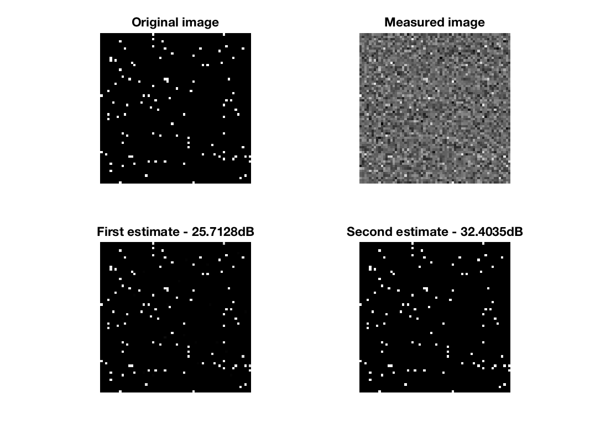

DEMO_WEIGHTED_L1 - Demonstration of the use of the bpdn solverDescriptionWe solve a compress sensing problem in 2 dimensions.
\begin{equation*}
arg \min_x \| \Psi x\|_1 s.t. \|y-A x\|_2 < \epsilon
\end{equation*}
We first solve the problem very generally. Then using the first solution, we define weight for the L1 norm and compute again the solution. A is a mask operator in the Fourier domain. The measurements are done in the Fourier domain.

Figure
Results of the code
This code produces the following output: UnLocBoX version 1.7.3. Copyright 2012-2015 LTS2-EPFL, by Nathanael Perraudin The time step is set manually to : 0.1 DOUGLAS_RACHFORD f(x^*) = 1.020771e+02, rel_eval = 8.919781e-05, it = 41, REL_NORM_OBJ The time step is set manually to : 0.1 DOUGLAS_RACHFORD f(x^*) = 4.317867e+02, rel_eval = 3.538401e-03, it = 300, MAX_IT |